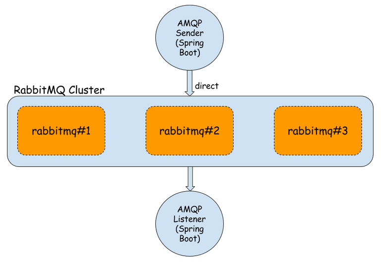
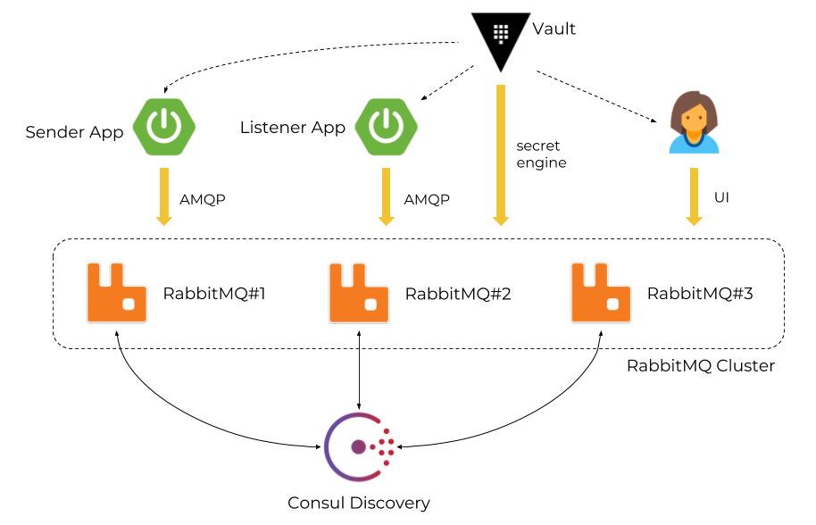
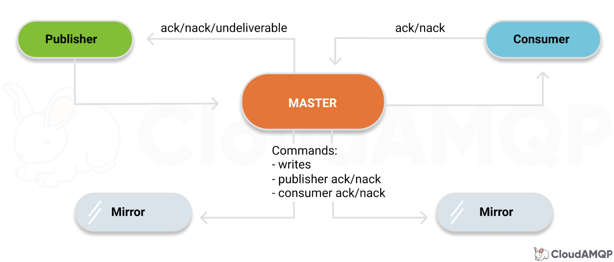
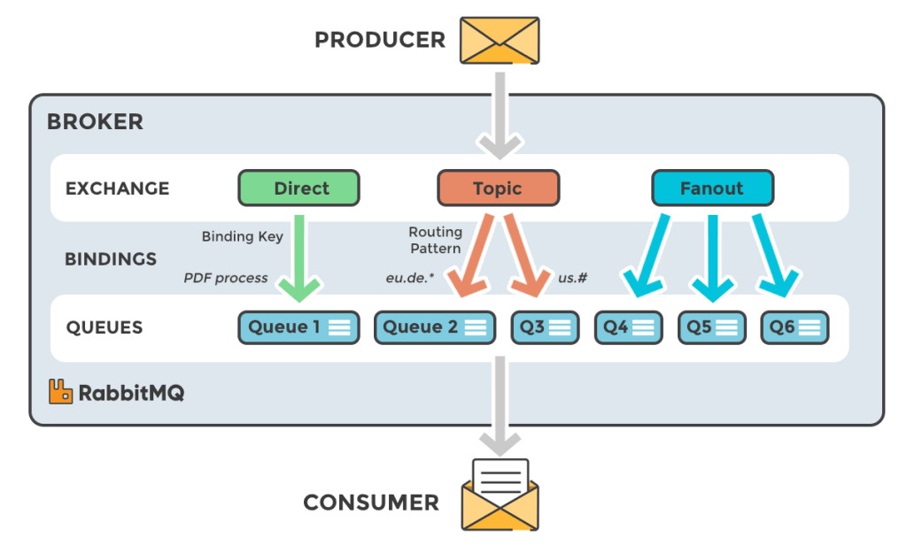
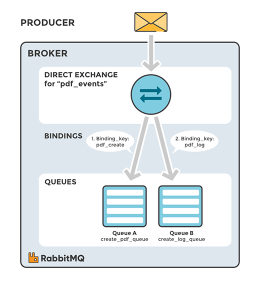
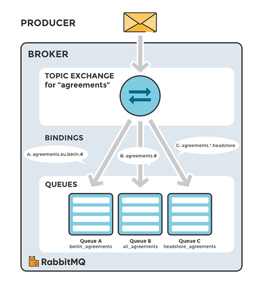

rabbitmq采用什么系统架构，有哪些常规使用模式？
RabbitMQ的物理架构
- 架构1：普通架构
First node is the master of cluster – two other nodes will join him.
We use container management to enable an UI administration console for each node.
Every node has default connection and UI management ports exposed.
Important thing is to link rabbit2 and rabbit3 constainers to rabbit1, which is necessary while joining to cluster mastering by rabbit1.
1 | rabbit1 --name rabbit1 -e RABBITMQ_ERLANG_COOKIE='rabbitcluster' -p 30000:5672 -p 30001:15672 rabbitmq:management |
- 架构2：加入集群权限管理和节点自注册
We use Vault as a credentials manager when applications try to authenticate against RabbitMQ node or user tries to login to RabbitMQ web admin console.
Each RabbitMQ node registers itself after startup in Consul and retrieves list of nodes running inside a cluster.
Vault is integrated with RabbitMQ using dedicated secrets engine.
RabbitMQ的结点类型
rabbitmq节点类型有内存节点（ram node）和磁盘节点(disk node)。
RAM node:内存节点将所有的队列、交换机、绑定、用户、权限和vhost的元数据定义存储在内存中，好处是可以使得像交换机和队列声明等操作更加的快速。Disk node:将元数据存储在磁盘中，单节点系统只允许磁盘类型的节点，防止重启RabbitMQ的时候，丢失系统的配置信息。
RabbitMQ要求在集群中至少有一个磁盘节点，所有其他节点可以是内存节点，当节点加入或者离开集群时，必须要将该变更通知到至少一个磁盘节点。
问题说明：如果集群中唯一的一个磁盘节点崩溃的话，集群仍然可以保持运行，但是无法进行其他操作（增删改查），直到节点恢复。
解决方案：设置两个磁盘节点，至少有一个是可用的，可以保存元数据的更改。
RabbitMQ的集群模式
RabbitMQ的Cluster集群模式分为2种，普通模式和镜像模式。
普通模式(default)
- 默认的集群模式，对于Queue来说，
消息实体只存在于其中一个节点，对于集群上的所有节点仅有相同的元数据，即队列的结构。 - 当消息进入集群中某个节点的Queue后，consumer从另外一个节点消费时，比如node1、node2两个节，RabbitMQ会临时在node1、node2间进行消息传输，把A中的消息实体取出并经过B发送给consumer。
- 所以
consumer应尽量连接每一个节点，从中取消息。即对于同一个逻辑队列，要在多个节点建立物理Queue。否则无论consumer连或node1还是node2，出口总在node1，会产生瓶颈。 - 当node1节点故障后，node2节点无法取到node1节点中还未消费的消息实体。如果做了消息持久化，那么得等node1节点恢复，然后才可被消费；如果没有持久化的话，就会产生消息丢失的现象。
镜像模式
将需要消费的队列变为镜像队列，存在于多个节点（至少3个），这样就可以实现RabbitMQ的HA高可用性。
作用就是消息实体会主动在镜像节点之间实现同步，而不是像普通模式那样，在consumer消费数据时临时读取。缺点是集群内部的同步通讯会占用大量的网络带宽。

镜像队列实现了RabbitMQ的高可用性（HA），具体的实现策略如下：
all：镜像队列将会在整个集群中复制。当一个新的节点加入后，也会在这个节点上复制一份。exactly（count）：镜像队列将会在集群上复制count份。如果集群数量少于count时候，队列会复制到所有节点上。如果大于Count集群，有一个节点crash后，新进入节点也不会做新的镜像。nodes（node name）： 镜像队列会在node name中复制。如果这个名称不是集群中的一个，这不会触发错误。如果在这个node list中没有一个节点在线，那么这个queue会被声明在client连接的节点。
一般互联网大厂都会构建这种镜像集群模式;
实际生产环境：一般客户端是通过HAProxy这类负载均衡对MQ进行访问；
双活模式
- 实现异地集群的都是采用这种
双活或者多活模型来实现的。这种模式需要依赖 rabbitMQ 的federation插件，可以实现持续的，可靠的 AMQP 数据通信，多活模式在实际配置与应用非常的简单。 - rabbitMQ 部署架构采用双中心模式(多中心)，那么在两套(或多套)数据中心各部署一套 rabbitMQ 集群，各中心的rabbitMQ 服务除了需要为业务提供正常的消息服务外，中心之间还需要实现部分队列消息共享。
RabbitMQ的逻辑架构

- 发布者（producer）是发布消息的应用程序。
- 队列（queue）用于消息存储的缓冲。
- 消费者（consumer）是接收消息的应用程序。
- 消息代理（message broker）：消息代理（message brokers）从生产者（producers）那儿接收消息，并根据既定的路由规则把接收到的消息发送给处理消息的消费者（consumers）。
由于AMQP是一个网络协议，所以这个过程中的发布者，消费者，消息代理可以存在于不同的设备上。
AMQP，即Advanced Message Queuing Protocol,一个提供统一消息服务的应用层标准高级消息队列协议,是应用层协议的一个开放标准,为面向消息的中间件设计。基于此协议的
客户端与消息中间件可传递消息，并不受客户端/中间件不同产品，不同的开发语言等条件的限制。Erla
RabbitMQ消息模型的核心理念
- producer：消息生产者，不会直接发送任何消息给队列，事实上，发布者（producer）甚至不知道消息是否已经被投递到队列，发布者（producer）只需要把消息发送给一个交换机（exchange）
- consumer：消息消费者
- virtual host：虚拟主机，在RabbitMQ中，用户只能在虚拟主机的层面上进行一些权限设置，比如我可以访问哪些队列，我可以处理哪些请求等等；
- broker：消息转发者，也就是我们RabbitMQ服务端充当的功能了，那么消息是按照什么规则进行转发的呢？需要用到下面几个概念；
- exchange：交换机，一边从发布者方接收消息，一边把消息推送到队列。交换机必须知道如何处理它接收到的消息，是应该推送到指定的队列还是是多个队列，或者是直接忽略消息，这些规则是通过交换机类型（exchange type）来定义的；
- routing key(路由键)，每个消息都有这个键，我们也可以自己设定，其实就是一字符串；
- queue：消息队列，用于存放消息，他接收exchange路由过来的消息，我们可以对队列内容进行持久化操作，
- binding key(绑定键)：queue到底接收哪个exchange路由的消息？这个时候就要用到binding key(绑定键)了，绑定键会将队列和exchange进行绑定，至于绑定方式，RabbitMQ提供了多种方式（direct,topic,fanout,header）；
交换机（Exchange）

交换机的属性
除交换机类型外，在声明交换机时还可以附带许多其他的属性，其中最重要的几个分别是：
- Name
- Durability （消息代理重启后，交换机是否还存在）
- Auto-delete （当所有与之绑定的消息队列都完成了对此交换机的使用后，删掉它）
- Arguments（依赖代理本身）
Exchange可以有两个状态：持久态（durable）、瞬态（transient）。
持久化的Exchange会在消息代理（broker）重启后依旧存在，而瞬态的Exchange则不会（它们需要在broker再次上线后重新被声明）。
然而并不是所有的应用场景都需要持久化的Exchange。
交换机的类型
直连交换机(amq.direct)
定义：将消息中的Routing key与该Exchange关联的所有Binding中的Routing key进行比较，如果相等，则发送到该Binding对应的Queue中。

主题交换机(amq.topic)
定义：将消息中的Routing key与该Exchange关联的所有Binding中的Routing key进行规则对比，如果匹配上了，则发送到该Binding对应的Queue中。
主题交换机是很强大的，它可以表现出跟其他交换机类似的行为当一个队列的绑定键为 “#”（井号） 的时候，这个队列将会无视消息的路由键，接收所有的消息。当 * (星号) 和 # (井号) 这两个特殊字符都未在绑定键中出现的时候，此时主题交换机就拥有的直连交换机的行为。

> 示例中，我们发送的所有消息都是用来描述小动物的。发送的消息所携带的路由键是由三个单词所组成的，这三个单词被两个.分割开。
路由键里的第一个单词描述的是动物的手脚的利索程度，第二个单词是动物的颜色，第三个是动物的种类。所以它看起来是这样的： `<celerity>.<colour>.<species>`。
我们创建了三个绑定：Q1的绑定键为 `*.orange.*`，Q2的绑定键为 `*.*.rabbit` 和` lazy.#` 。
这三个绑定键被可以总结为：
>* Q1 对所有的桔黄色动物都感兴趣。
>* Q2 则是对所有的兔子和所有懒惰的动物感兴趣。
扇型交换机(amq.fanout)
定义：直接将消息转发到所有binding的对应queue中，这种exchange在路由转发的时候，忽略Routing key。

把消息发送给所有绑定的队列，没有足够的灵活性，它能做的仅仅是广播。
头交换机(
amq.headers)定义：将消息中的
headers与该Exchange相关联的所有Binging中的参数进行匹配，如果匹配上了，则发送到该Binding对应的Queue中。

header exchange(头交换机)和主题交换机有点相似，但是不同于主题交换机的路由是基于路由键，
头交换机的路由值基于消息的header数据。 主题交换机路由键只能是字符串,而头交换机可以是整型和哈希值
默认交换机
1 | channel.basic_publish(exchange='', |
默认交换机（default exchange）实际上是一个由消息代理预先声明好的没有名字（名字为空字符串）的直连交换机（direct exchange）。
它有一个特殊的属性使得它对于简单应用特别有用处：那就是每个新建队列（queue）都会自动绑定到默认交换机上，绑定的路由键（routing key）名称与队列名称相同。
The default exchange is a direct exchange with no name (empty string) pre-declared by the broker. It has one special property that makes it very useful for simple applications:
every queue that is created is automatically bound to it with a routing key which is the same as the queue name.
路由(Routing)
- 功能：用于订阅消息的一个字集
- 应用场景：日志消息系统中，我们只需要把严重的错误日志信息写入日志文件（存储到磁盘），但同时仍然把所有的日志信息输出到控制台中；发送消息到一个exchange(direct类型)，把日志级别作为RoutingKey。这样接收日志的脚本(consumer)就可以根据logLevel来选择它想要处理的日志。

- 注意：绑定RoutingKey的意义取决于交换机（exchange）的类型。扇型交换机（fanout exchanges）会忽略这个值。
队列
AMQP中的队列（queue）跟其他消息队列或任务队列中的队列是很相似的：它们存储着即将被应用消费掉的消息。
队列跟交换机共享某些属性，但是队列也有一些另外的属性。
- NameDurable（消息代理重启后，队列依旧存在）
- Exclusive（只被一个连接（connection）使用，而且当连接关闭后队列即被删除）
- Auto-delete（当最后一个消费者退订后即被删除）
- Arguments（一些消息代理用他来完成类似与TTL的某些额外功能）队列在声明（declare）后才能被使用。
队列声明
- 如果一个队列尚不存在，声明一个队列会创建它。
- 如果声明的队列已经存在，并且属性完全相同，那么此次声明不会对原有队列产生任何影响。
- 如果声明中的属性与已存在队列的属性有差异，那么一个错误代码为406的通道级异常就会被抛出。
RabbitMQ实现的RPC

RPC工作流程:
- 当客户端启动的时候，它创建一个匿名独享的回调队列。
- 在RPC请求中，客户端发送带有两个属性的消息：一个是设置回调队列的
reply_to属性，另一个是设置唯一值的correlation_id属性。 - 将请求发送到一个rpc_queue队列中。
- RPCServer等待请求发送到这个队列中来。当请求出现的时候，它执行他的工作并且将带有执行结果的消息发送给reply_to字段指定的队列。
- 客户端等待回调队列里的数据。当有消息出现的时候，它会检查correlation_id属性。如果此属性的值与请求匹配，将它返回给应用。
使用问题记录
basicQos控制消费者接收的消息数量
1 | Channel channel = ...; |